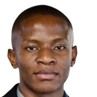

South Africa · Reporter

Alpha Ramushwana
Political journalist, EWN
Updated · 7 coalition pieces tracked
Who is Alpha Ramushwana?
Alpha Ramushwana (Political journalist, EWN) is one of the journalists and commentators Preamble’s Coalitions Tracker follows on the coalition talks after South Africa’s 4 November 2026 local government elections.
What has Alpha Ramushwana said about the coalition talks?
- Reported that Joburg’s mayor is now expected to be elected on Friday, with Ekurhuleni sitting Wednesday and Tshwane Thursday. Story: Joburg council meets to elect a mayor as reports say MK is out of the deal
- Reported the failed DA–ActionSA meeting and Hill-Lewis saying the DA wouldn’t match the ANC’s offer. Story: The DA offers the ANC 93 mayoralties; ActionSA rejects its Gauteng deal
- Reported the ANC–MK eThekwini talks and the Council of the Left’s refusal to back ANC deals that include the DA. Story: MK talks to everyone, the DA included, but says it wants like-minded partners
What is Alpha Ramushwana’s latest on the coalitions?
On 23 November 2026, EWN: 270 Joburg councillors sworn in, but election of new mayor expected to wait until Thursday. Reporting from the council chamber, Ramushwana wrote that Mashaba and Zille sat on opposite sides as 270 councillors took their oaths. City manager Floyd Brink said some parties had asked to postpone the mayoral vote.
Every piece we track, newest first
EWN · Reported 270 Joburg councillors sworn in, but election of new mayor expected to wait until ThursdayReporting from the council chamber, Ramushwana wrote that Mashaba and Zille sat on opposite sides as 270 councillors took their oaths. City manager Floyd Brink said some parties had asked to postpone the mayoral vote.
EWN · Reported ‘DA’s offer is not a proposal but an insult’: ActionSA after coalition talks failRamushwana reported that the DA and ActionSA met on Thursday night and ended without agreement, each unhappy with the other’s proposal. Mashaba told EWN the DA’s offer was “not a proposal but an insult”.
EWN · Reported MK Party and ANC discuss possible eThekwini coalitionRamushwana reported that MK and the ANC were discussing governing eThekwini together with an MK mayor. MK spokesperson Sifiso Mahlangu said the party was leaning towards parties it already has arrangements with.
EWN · Reported Hill-Lewis: DA unlikely to match ANC’s coalition offer to ActionSARamushwana reported Hill-Lewis saying the DA was unlikely to match the ANC’s offer to ActionSA. Hill-Lewis confirmed some in the DA had informally discussed him swapping places with Zille, but said it was never put to ActionSA.
EWN · Reported Left-wing parties refuse to back ANC-led coalitions that include the DARamushwana reported that the Council of the Left, a bloc including the EFF, SACP, MK and the Afrika Mayibuye Movement, would not support ANC-led coalitions that include the DA. The bloc briefed the media at the hotel where the ANC’s NEC was meeting.
EWN · Reported Zille, Mashaba officially sworn in as Joburg councillorsRamushwana reported that all 270 councillors, including Zille, Mashaba and MK’s 15, had taken their oaths, with 21 parties now in the council. City manager Floyd Brink said the DA had asked for the election of the mayor to be postponed.
EWN · Reported Coalition negotiations: new Joburg mayor now expected to be elected FridayRamushwana reported that parties were in the final stages of coalition talks and that Johannesburg’s mayor is now expected to be elected on Friday, after councillors agreed on Monday to postpone the vote. Ekurhuleni’s council sits on Wednesday and Tshwane’s on Thursday.
Preamble summarises published reporting and links to every original. Alpha Ramushwana does not write for Preamble, and this page is not endorsed by them.